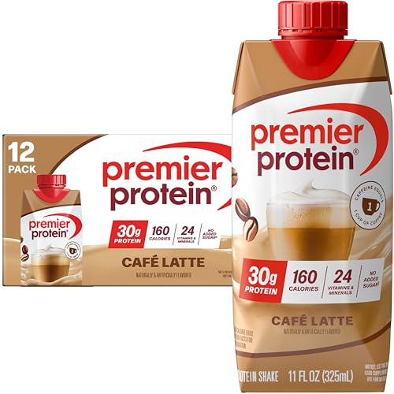
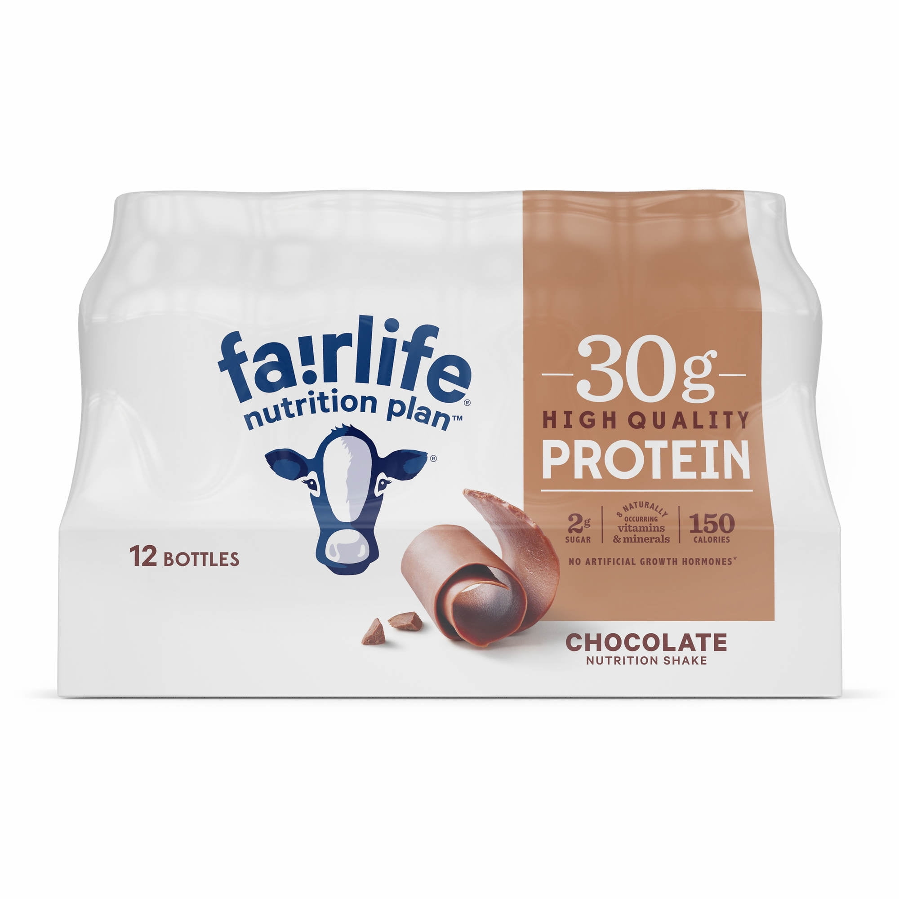
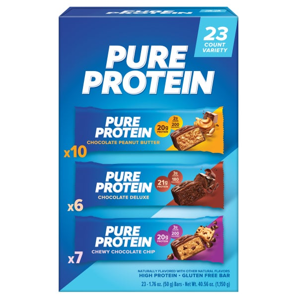
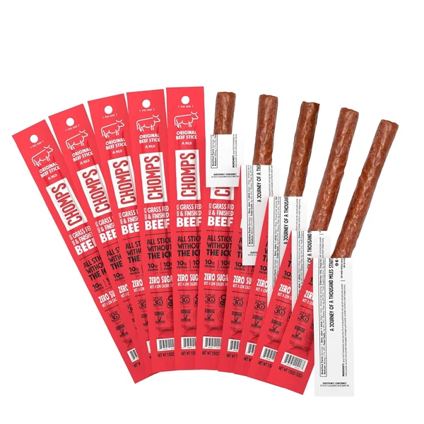
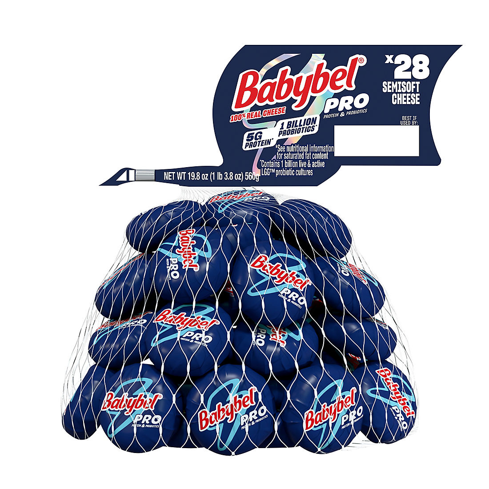
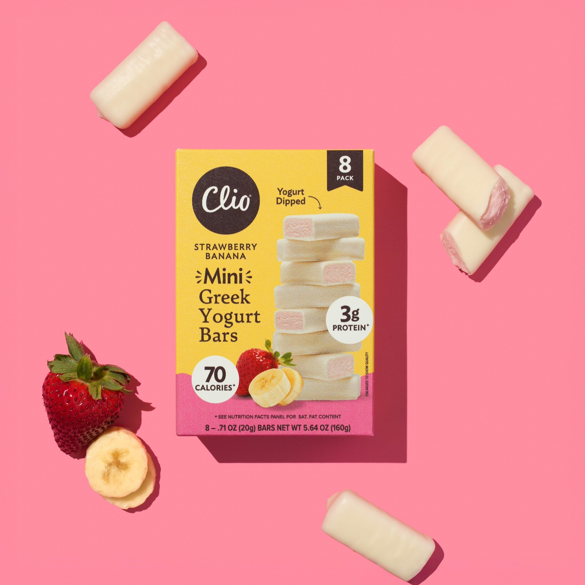
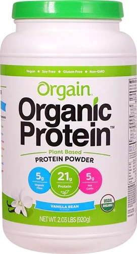
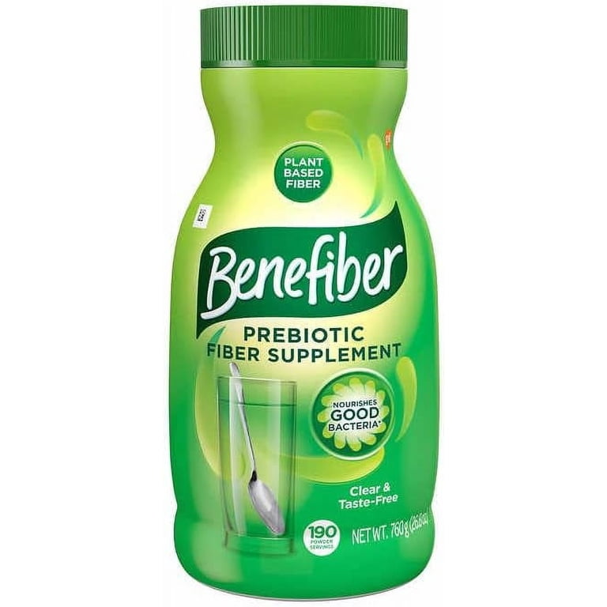
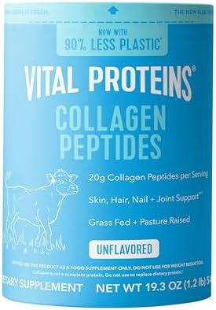
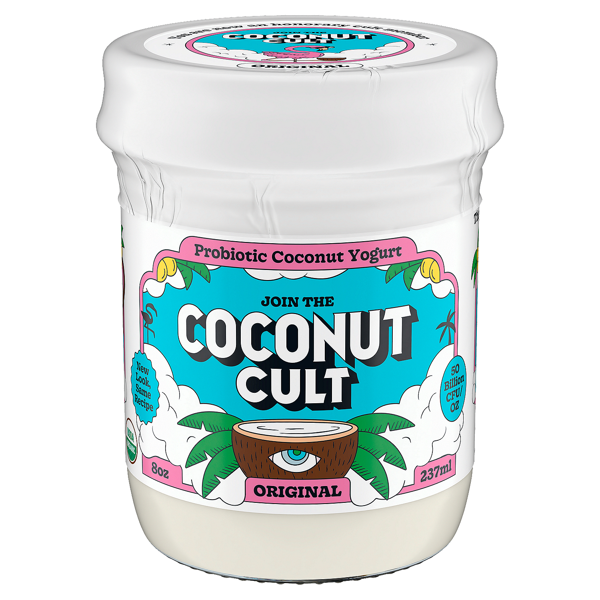

A New Chapter in My Health Journey
I am documenting my own healthy metabolism journey in my 50s, and sharing what I learn and what I love along the way.
My story
For most of my adult life, I worked out, tried to eat well, and did my best to stay healthy. After 45, as perimenopause arrived, the strategies that used to work stopped working. My body was changing and I needed to change with it.
I started Zepbound with my doctor's guidance. When you lose weight fast, your body burns muscle too, and after 50, muscle is everything. So protein became my number one focus, along with strength training to protect what I have.
I share what I learn and what I actually use, so other women over 45 can make informed decisions about their own health. Being older should not mean giving up on feeling strong.
This is my personal journey, not medical advice. Talk to your clinician about what is right for you.
My turning point
I was skeptical about GLP-1 medication for a long time. What changed my mind was learning that obesity is a chronic condition, and for many people, long-term treatment is part of managing it, the way blood pressure medication works for hypertension.
Once I saw it as medical care rather than a shortcut, I talked to my doctor and started this chapter.
Everything I use is linked below. Real products from my own kitchen and routine, no sponsored placements.
See my Amazon FavoritesI also built a GLP-1 tracking app — $3.99/mo.
Amazon Favorites
Everything on this page is something I actually use in my own routine. If it is here, I bought it, I use it, and I would buy it again. When I find something new worth sharing, it lands here first.
My promise: no sponsored placements, no paid rankings. Just what works for me, shared the way I would tell a friend.
Healthy Metabolism
Below are the high-protein staples actually in my kitchen right now: my morning shake, my snacks, my bars. I keep sugar and saturated fat low, and I pair it all with strength training to protect muscle and Pilates for everything else.

Premier Protein Café Latte Shake, 30g protein
My morning shake. The caffeine gets me going and it is genuinely delicious.
Shop on Amazon
Fairlife Nutrition Plan Chocolate Shake, 30g protein
My other everyday shake, smooth and filling.
Shop on Amazon
Pure Protein Bars, Chocolate Variety Pack
20 to 21 grams of protein per bar, my grab-and-go.
Shop on Amazon
Chomps Original Beef Jerky Snack Sticks
Clean-ingredient jerky for a savory protein snack.
Shop on Amazon

Clio Mini Greek Yogurt Bars, Variety Pack
Tastes like a treat, eats like a snack with protein.
Shop on AmazonMy wellness staples




From the journal
Notes from the journey, as it happens.
💦 Water, water, water! Hydration matters! 💦
When you are taking a GLP-1 medication like Zepbound and eating less, it is especially important not to forget to drink enough water! 💧 Reduced food intake can also mean you are getting less fluid from food, so staying hydrated needs to be part of your daily routine.
💙 My daily goal is 80 oz of water!
I order eight 5-gallon jugs of purified water for delivery every other month, or as needed, to keep plenty of water on hand. My daughter also has fresh water readily available in our kitchen with our bottom-loading water dispenser.
💰 Money-saving tip: Compare competing water delivery services and negotiate! Ask whether a company will match or beat a competitor’s price. It never hurts to ask!
As I focus on my GLP-1 weight loss journey, kidney health, and long-term wellness, I am reminding myself that eating less is only part of the picture. We also need to prioritize hydration, adequate protein, and proper nutrition.
Small daily habits can make a big difference! 💦💪
Protein, Muscle, and My 50s
Here is something nobody told me when I started this journey. When you lose weight after 50, you do not just lose fat. You lose muscle too. And muscle is everything. It keeps you strong, it keeps your metabolism going, it keeps you independent.
My morning starts with a protein shake. I use Orgain vanilla bean powder blended with coffee, ice, and a little milk. It tastes like a treat and it gives me 21 grams of protein before my day even starts. I aim for protein at every meal now, not just dinner.
I also do strength training twice a week. Nothing extreme. Dumbbells, resistance bands, bodyweight exercises. I started with 10-pound weights and worked up from there. The goal is not to look like a bodybuilder. The goal is to keep the muscle I have.
What I have learned: protein and strength training are not optional on a GLP-1. They are the whole game. The medication helps with appetite. Protein and muscle protect everything else.
Five-Minute Makeup That Loves Mature Skin
I do not have time for a 12-step routine. Here is what actually works on my 52-year-old skin in five minutes.
Step one: moisturizer. Always. Mature skin needs hydration before anything else goes on. I let it sink in for a minute while I pick out clothes.
Step two: tinted moisturizer or light foundation. I stopped wearing heavy foundation years ago. It settles into every line. A sheer formula evens things out without looking like a mask.
Step three: cream blush on the apples of my cheeks. Powder blush can look dry on mature skin. Cream melts in and looks like you just came in from a walk.
Step four: mascara. One coat, top lashes only. It opens up your whole face.
Step five: tinted lip balm. Color and moisture in one step.
That is it. Five products, five minutes. I look like myself, just a little more awake.
My Morning Routine on Zepbound
Mornings set the tone for my whole day. Here is what mine looks like now.
I wake up and drink a full glass of water before anything else. Hydration first, always. Then I make my protein coffee shake. Orgain vanilla bean, cold brew, ice, a splash of milk. I sip it while I get ready.
I check in with my body. How am I feeling today? Any nausea? How is my energy? I jot a quick note in my tracker. It takes 30 seconds and it helps me see patterns over time.
If it is a strength training day, I do 20 minutes with dumbbells after my shake settles. If not, I take a walk. Movement does not have to be intense. It just has to happen.
Then I get dressed, do my five-minute makeup, and start my day. The whole routine takes about an hour, and it makes everything after it easier.
The biggest change: I stopped skipping breakfast. On Zepbound, it is easy to not feel hungry in the morning. But my body needs fuel, especially protein. The shake makes it simple.
Everything I share here is personal and educational. This is my journey, not medical advice. Talk to your clinician about what is right for you. As an Amazon Associate I earn from qualifying purchases.